Bibai
Bibai · Hokkaido
Bibai
Highlighted on the Hokkaido map.
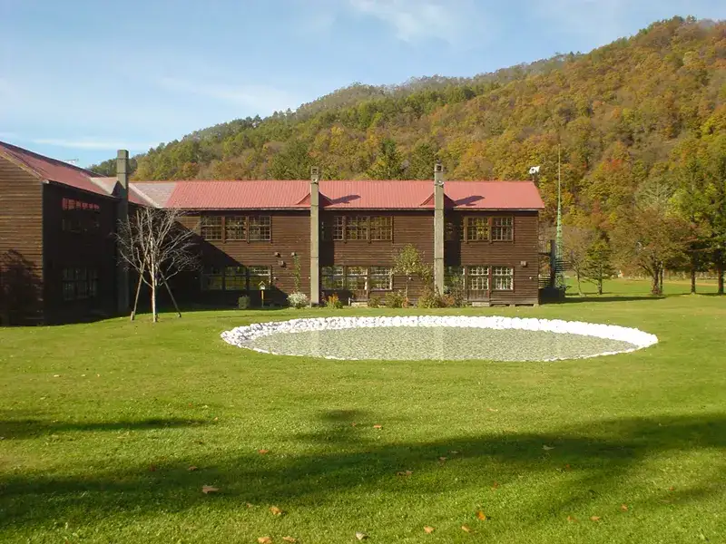
Stay
La Station
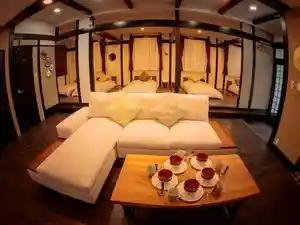
La Station
美唄駅前ホテルＢＩＪＩＫＯ
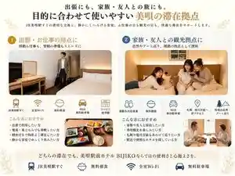
Bibai Ekimae Hoteru B I J I K O
青の洞窟温泉 ピパの湯 ゆ～りん館
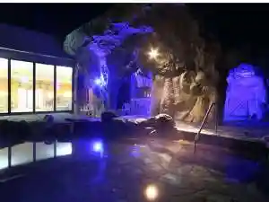
Ao No Doukutsu Onsen Pipa No Yu Yu ~ Rin Kan
Hokkaido ZEN Cabin
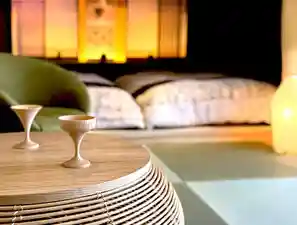
Hokkaido Zen Cabin
Dining
ユキノアジト
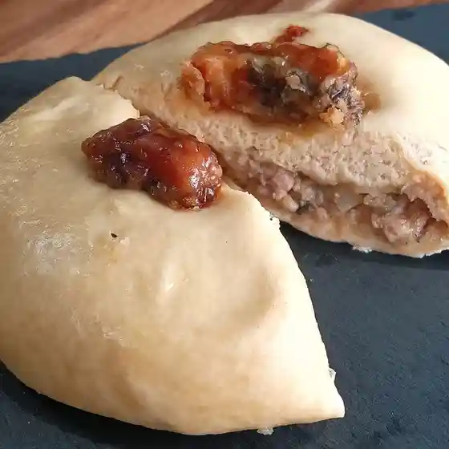
Yukinoajito
居酒屋こころ
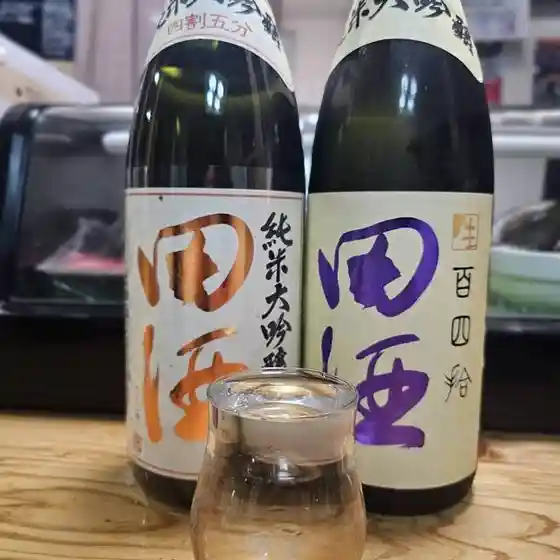
Izakaya Kokoro
つぼ八 美唄店
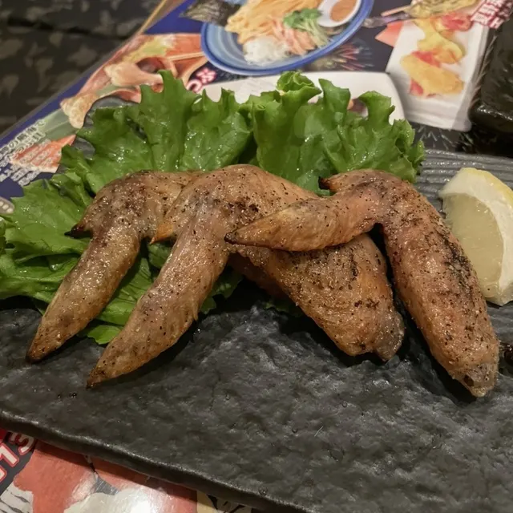
Tsubo Hachi Bibai Mise
焼菓子と珈琲 Tomarigi
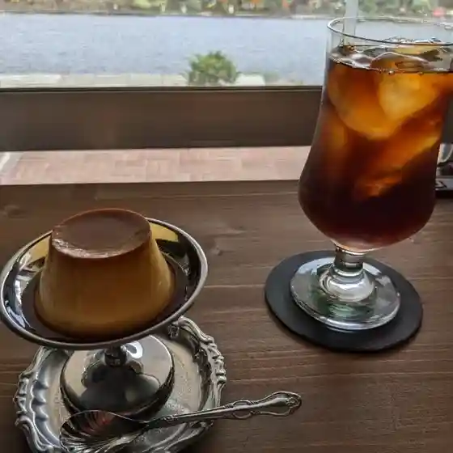
Yaki Kashi To Koohii Tomarigi
すしのせきね
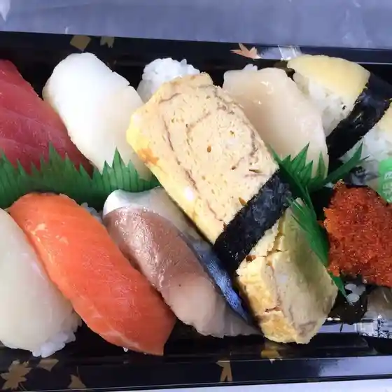
Sushinosekine
美唄市役所 食堂
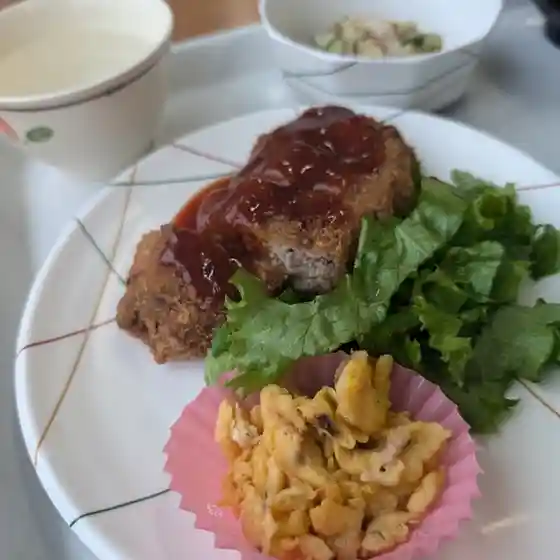
Bibai Shiyakusho Shokudou
Sweepy Crepe
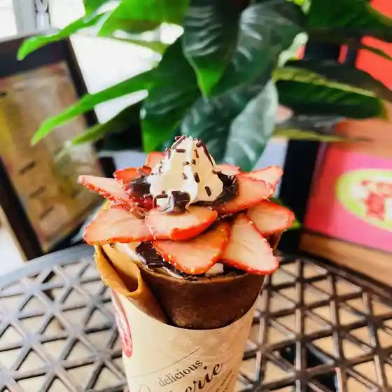
Sweepy Crepe
郷里の味なかむら えぷろん倶楽部
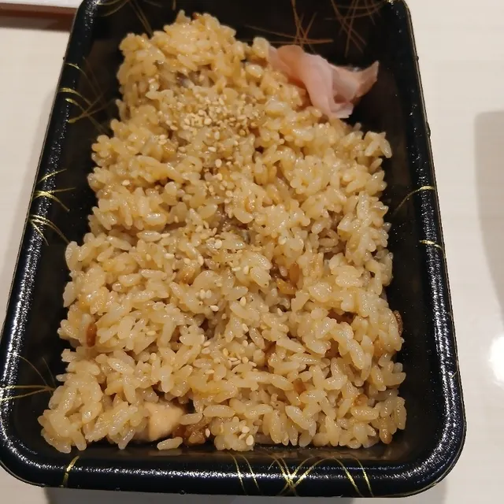
Kyouri No Aji Nakamura Epuron Kurabu
トナリノトナカイ
Tonarinotonakai
日用品と喫茶 Tape
Nichiyouhin To Kissa Tape
清香園
Kiyoka Sono
びばいバル スキマ
Bibai Baru Sukima
鹿
Shika
ハマナスクラブ 美唄駅前店
Hamanasukurabu Bibai Ekimae Mise
(有)角屋
( Ari ) Sumiya
町のカレー屋さん
Machi No Karee Ya San
的場旅館
Matoba Ryokan
ピパの湯ゆーりん館
Pipa No Yu Yuurin Kan
平和軒
Heiwa Ken
手打ちそば 福松 峰延店
Teuchi Chisoba Fukumatsu Mine En Mise
プールベル
Puuruberu
きたむら民宿
Kitamura Minshuku
居酒屋あべちゃんち
Izakaya Abechanchi
札幌海鮮丸 美唄店
Sapporo Kaisen Maru Bibai Mise